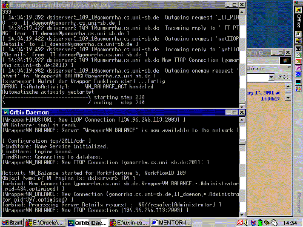

| Next Step |
Workflow Engine and Orbix Daemon
The execution of the workflow continues following the workflow specification and depending on the submitted flow control data.
 |
| (click on figure to enlarge) |

The workflow specifications are interpreted at runtime, which is a crucial prerequisite for flexible exception handling and dynamic modifications during runtime. The interpreter performs a stepwise execution of the workflow specification according to its formal semantics [1]. For each step, the activities to be performed by the step are determined. Automatic activities, i.e. activities that do not require any user interaction, are immediatly started via CORBA. Intellectual activities are added to a user's worklist after a role resolution.
Mentor-lite supports a protocol for distributed execution of workflows. A communication manager is responsible for sending and receiving synchronization messages between the engines. These messages contain information about locally raised events, updates of state chart variables and state information of the local engine [2]. When a synchronization message is received, the corresponding updates at the receiving site are performed. In order to guarantee a consistent global state even in the presence of site or network failures, we have built reliable message queues using the CORBA Object Transaction Services.
After a while the next user finds the next activity as a work item in her worklist and the workflow goes on ...
References
[1] D. Wodtke, G.Weikum: A Formal Foundation for Distributed Workflow Execution Based on State Charts, in Proceedings of International Confonference on Database Theory (ICDT), Delphi, Greece, 1997.
[2] P. Muth, D. Wodtke, J. Weissenfels, A. Kotz Dittrich, G. Weikum: From Centralized Workflow Specification to Distributed Workflow Execution, in Journal of Intelligent Information Systems, 10:2, 1998
| Next Step |